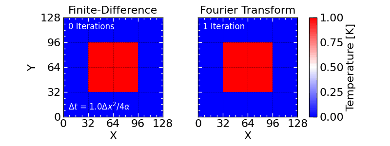

Heat Conduction — Solving PDEs with the FFT
Topic: The pseudo-spectral method — turning a partial differential equation into one decoupled ODE per Fourier mode, and solving it exactly with the FFT. Chapter: 4 — More about FFT Companion: Electromagnetic Waves — Solved with the FFT
Background
Most physical fields — temperature, pressure, the electromagnetic field — obey partial differential equations involving spatial derivatives. In real space a derivative couples every grid point to its neighbours, which is what makes PDEs hard. But a derivative is diagonal in Fourier space: differentiating e^{ikx} just multiplies it by ik. So the Fourier transform turns
\frac{\partial}{\partial x} \;\longrightarrow\; ik, \qquad \nabla^2 \;\longrightarrow\; -k^2,
and a linear, constant-coefficient PDE collapses into a family of independent ordinary differential equations — one for each Fourier mode — that often have a closed-form solution. This is the pseudo-spectral method, and the FFT makes it fast.
Key idea
Take the 2-D heat equation \partial_t T = \alpha \nabla^2 T. Fourier-transform in space and the coupled PDE becomes, mode by mode,
\frac{d\hat T(\mathbf k,t)}{dt} = -\alpha\,k^2\,\hat T(\mathbf k,t) \qquad\Longrightarrow\qquad \hat T(\mathbf k,t) = \hat T(\mathbf k,0)\,e^{-\alpha k^2 t}.
Each mode simply decays exponentially, at a rate set by k^2 — so short-wavelength (high-k) features die fastest, which is exactly why sharp edges blur first and the field relaxes toward smoothness. The whole solver is: FFT the initial condition, multiply by e^{-\alpha k^2 t}, inverse-FFT. Crucially it is exact in time — you can jump straight to any t with no time-stepping — whereas an explicit finite-difference scheme must crawl forward in steps small enough (\Delta t < \Delta x^2/4\alpha) to stay stable.
Code
import numpy as np
from scipy.fft import fft2, ifft2, fftfreq
N, dx, alpha = 128, 1.0, 1.0
dt = dx**2 / (4 * alpha) # finite-difference stability limit
k = 2*np.pi*fftfreq(N, d=dx)
KX, KY = np.meshgrid(k, k, indexing='ij')
k2 = KX**2 + KY**2 # Laplacian -> -k^2
T0 = np.zeros((N, N)); T0[N//4:3*N//4, N//4:3*N//4] = 1.0 # a hot square block
T0hat = fft2(T0)
T_fd = T0.copy()
for i in range(400):
t = i * dt
# (1) FINITE DIFFERENCE — explicit 5-point Laplacian, many tiny stable steps
lap = (np.roll(T_fd, 1, 0) + np.roll(T_fd, -1, 0) +
np.roll(T_fd, 1, 1) + np.roll(T_fd, -1, 1) - 4*T_fd) / dx**2
T_fd += alpha * dt * lap
# (2) SPECTRAL — exact solution at time t, in a single shot, no stability limit
T_spec = np.real(ifft2(T0hat * np.exp(-alpha * k2 * t)))Result

The two panels are the same heat equation solved two ways. On the left, the classic finite-difference method: approximate the Laplacian with a 5-point stencil and step forward in time — but each step must be tiny (\Delta t < \Delta x^2/4\alpha) or the scheme goes unstable and blows up, so reaching a given time takes hundreds of steps. On the right, the spectral method: a single line, \hat T(\mathbf k,t)=\hat T(\mathbf k,0)\,e^{-\alpha k^2 t}, jumps straight to any time with no stability limit and no accumulation of step-by-step error, because in Fourier space every mode evolves independently and exactly. The two tracks agree frame-for-frame — which is the point: the spectral method reaches the same answer, faster and exactly.
That is the appeal of spectral methods: a hard, spatially-coupled PDE becomes pointwise multiplication in k-space. The same trick — \nabla \to i\mathbf k — solves Poisson’s equation (divide by -k^2), advection, the wave equation, and, with the nonlinear term handled pseudo-spectrally, even Navier–Stokes. The heat equation is the easiest case because it has a real, decaying exponential per mode; the electromagnetic-wave companion shows what happens when that exponential becomes oscillatory — Maxwell’s curl equations solved the same spectral way.
See Chapter 4 for the finite-difference comparison, Maxwell’s equations in k-space, and stability of time-stepping schemes.